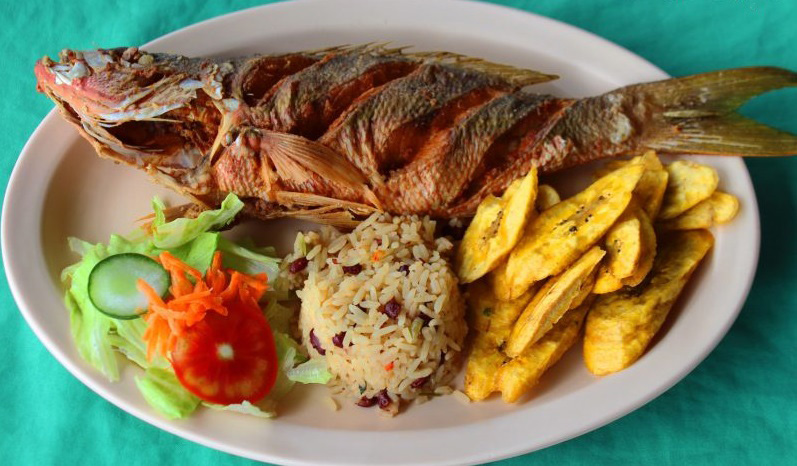

<!DOCTYPE html>
<html>
	<head>
		<meta charset="UTF-8"/>
		<title>Visor Turístico Municipio de Tela</title>
		
		<link rel="stylesheet" href="https://unpkg.com/leaflet@1.3.1/dist/leaflet.css" 
		integrity="sha512-Rksm5RenBEKSKFjgI3a41vrjkw4EVPlJ3+OiI65vTjIdo9brlAacEuKOiQ5OFh7cOI1bkDwLqdLw3Zg0cRJAAQ==" 
		crossorigin=""/>
  
		<script
			src="https://unpkg.com/leaflet@1.3.1/dist/leaflet.js" 
			integrity="sha512-/Nsx9X4HebavoBvEBuyp3I7od5tA0UzAxs+j83KgC8PU0kgB4XiK4Lfe4y4cgBtaRJQEIFCW+oC506aPT2L1zw==" 
			crossorigin="">	
		</script>
		
		  
		<script src="https://unpkg.com/esri-leaflet@2.3.0/dist/esri-leaflet.js"
  integrity="sha512-1tScwpjXwwnm6tTva0l0/ZgM3rYNbdyMj5q6RSQMbNX6EUMhYDE3pMRGZaT41zHEvLoWEK7qFEJmZDOoDMU7/Q=="
  crossorigin=""></script>
	
	<script type="text/javascript" src="http://maps.stamen.com/js/tile.stamen.js?v1.3.0"></script>
		
	<script type="text/javascript" src="Tela_Curvas.js"></script>
	
	<script type="text/javascript" src="Tela_Hidro.js"></script>
	
	<script type="text/javascript" src="Tela_Limite.js"></script>
	
	<script type="text/javascript" src="Tela_Vial.js"></script>
	
	<script type="text/javascript" src="Aldeas_Tela.js"></script>
	
	<link rel="stylesheet" href="Control.MiniMap.css"/>
	<script src="Control.MiniMap.js" type="text/javascript"></script>	

	<link rel="stylesheet" href="L.Control.MousePosition.css"/>
	<script src="L.Control.MousePosition.js" type="text/javascript"></script>	
	
	<script src="GIBSMetadata.js"></script>
	<script src="GIBSLayer.js"></script>
	
	<script src="Leaflet.MakiMarkers.js"></script>
	
	<script src="leaflet-dvf.js"></script> 
	
	
			<style>
					
					#map {
					width: 100%;
					height: 600px;
					box-shadow: 5px 5px 5px #888;
					}
					.info {
					padding: 6px 8px;
					font: 14px/16px Arial, Helvetica, sans-serif;
					background: white;
					background: rgba(255,255,255,0.8);
					box-shadow: 0 0 15px rgba(0,0,0,0.2);
					border-radius: 5px;
					}
					.info h2 {
					margin: 0 0 5px;
					color: #777;
					}
					.legend {
					line-height: 18px;
					color: #555;
					}
				
					.legend I {
					width: 18px;
					height: 18px;
					float: left;
					margin-right: 8px;
					opacity: 0.7;
					}
					
					</style>
	
	
	</head>
	<body>
		<div id="map" style="width: 1000px; height: 600px;"></div>
		<script>
				
				
							
				
				/*Base Layers*/
				
				var osm = L.tileLayer('https://api.tiles.mapbox.com/v4/{id}/{z}/{x}/{y}.png?access_token={accessToken}', {attribution: 'Map data &copy; <a href="https://www.openstreetmap.org/">OpenStreetMap</a> contributors, <a href="https://creativecommons.org/licenses/by-sa/2.0/">CC-BY-SA</a>, Imagery © <a href="https://www.mapbox.com/">Mapbox</a>', id: 'mapbox.streets-basic', accessToken: 'pk.eyJ1IjoibXIyMDE5IiwiYSI6ImNrMDV5Nmp3NDNxaWczaG12bnc5N3pvb2UifQ.NksRY4oRT76kBTu2cyc2iA', dragging: false, maxZoom: 17, minZoom: 10})
				
				var osm2 = L.tileLayer('https://api.tiles.mapbox.com/v4/{id}/{z}/{x}/{y}.png?access_token={accessToken}', {attribution: 'Map data &copy; <a href="https://www.openstreetmap.org/">OpenStreetMap</a> contributors, <a href="https://creativecommons.org/licenses/by-sa/2.0/">CC-BY-SA</a>, Imagery © <a href="https://www.mapbox.com/">Mapbox</a>', id: 'mapbox.streets-satellite', accessToken: 'pk.eyJ1IjoibXIyMDE5IiwiYSI6ImNrMDV5Nmp3NDNxaWczaG12bnc5N3pvb2UifQ.NksRY4oRT76kBTu2cyc2iA', dragging: false, maxZoom: 10, minZoom: 6})
	
				var osm3 = L.tileLayer('https://api.tiles.mapbox.com/v4/{id}/{z}/{x}/{y}.png?access_token={accessToken}', {attribution: 'Map data &copy; <a href="https://www.openstreetmap.org/">OpenStreetMap</a> contributors, <a href="https://creativecommons.org/licenses/by-sa/2.0/">CC-BY-SA</a>, Imagery © <a href="https://www.mapbox.com/">Mapbox</a>', id: 'mapbox.streets-satellite', accessToken: 'pk.eyJ1IjoibXIyMDE5IiwiYSI6ImNrMDV5Nmp3NDNxaWczaG12bnc5N3pvb2UifQ.NksRY4oRT76kBTu2cyc2iA', dragging: false, maxZoom: 15, minZoom: 10})
	
				var aqua = new L.StamenTileLayer("watercolor")
	
				var esriL = L.esri.basemapLayer('NationalGeographic');
								
						
				var map = L.map('map', {
					center: [15.7095, -87.4913],
					zoom: 11,
					layers: osm,
					maxBounds: [[15.46,-87.90], [16.14,-87.0]],
					zoomControl: false
					});
				
				var title = L.control();
				title.onAdd = function (map) {
				var div = L.DomUtil.create('div', 'info');
				div.innerHTML +='<h2>Mapa Turístico del Municipio de Tela</h2><center>Departamento de Atlántida, Honduras</center>';
				return div;
				};
				title.addTo(map);
				
											
							
				var estLim = {'color': "#f03b20",'weight': 2.0, 'fill': false};
				var lim = L.geoJson(telaLimite, {style: estLim});
				
					
				var estCurva = {'color': "#993404",'weight': 1.0, 'fill': false};
				var curn = L.geoJson(telaCurvas, {style: estCurva});
				
				var estVias = {'color': "#006d2c",'weight': 1.0, 'fill': false};
				var calles = L.geoJson(telaVial, {style: estVias});
				
				var estRios = {'color': "#3182bd",'weight': 1.5, 'fill': false};
				var rios = L.geoJson(telaHidro, {style: estRios});
								
				
				var lyrTelaDEM = L.imageOverlay('Teladem-01.png', [[15.9290,-87.8030],[15.5030,-87.3660]]);
				
				var lyrTelaHILL = L.imageOverlay('Telahillsh-01.png', [[15.9324,-87.8091],[15.5007,-87.3542]]);
				
				function getColor(d) {
				return d > 537.98 ? '#d7191c' :
				d > 309.64 ? '#fdae61' :
				d > 114.24 ? '#ffffbf' :
				d > 39.11 ? '#abd9e9' : '#2c7bb6';
				}

				function dens(feature) {
				return {
				fillColor: getColor(feature.properties.Densidad),
				weight: 2,
				opacity: 1,
				color: 'elegir',
				fillOpacity: 0.7
				};
				}
				
				var dpAldeas = L.geoJson(aldeasTela, {style: dens})
				
				
				/*Polígonos y Polilíneas*/
				
				var poligJEAN= L.polygon ([
					[15.73295349,-87.69916486],
					[15.73295323,-87.69844922],
					[15.73437719,-87.69757634],
					[15.7354481,-87.69665059],
					[15.73688059,-87.69685043],
					[15.7383177,-87.6966909],
					[15.74012029,-87.69513785],
					[15.74048141,-87.69410462],
					[15.74084269,-87.6927095],
					[15.7415667,-87.69136124],
					[15.74229158,-87.68928745],
					[15.74229127,-87.68856416],
					[15.74265384,-87.6868021],
					[15.74301669,-87.68503862],
					[15.7430162,-87.68395283],
					[15.74337948,-87.68254955],
					[15.74374287,-87.6807829],
					[15.74447139,-87.67905781],
					[15.74483402,-87.67764876],
					[15.74519252,-87.67478461],
					[15.74555593,-87.67301022],
					[15.74555018,-87.67155484],
					[15.74591509,-87.67086818],
					[15.7458894,-87.66903513],
					[15.74579774,-87.66570593],
					[15.74570151,-87.66310298],
					[15.74574953,-87.66096093],
					[15.74576555,-87.66024657],
					[15.74578957,-87.65917469],
					[15.74546954,-87.65735696],
					[15.74510401,-87.65587357],
					[15.74393755,-87.65428186],
					[15.74352377,-87.65277298],
					[15.74348494,-87.65130436],
					[15.74351335,-87.64987585],
					[15.74360042,-87.64811866],
					[15.7436876,-87.64635906],
					[15.74442322,-87.64497269],
					[15.74478874,-87.64355248],
					[15.74588732,-87.64218691],
					[15.74698873,-87.6411811],
					[15.74883071,-87.64059113],
					[15.75068047,-87.63963384],
					[15.7517941,-87.63898445],
					[15.75291053,-87.63796767],
					[15.75365632,-87.63655628],
					[15.75440333,-87.63477612],
					[15.75515324,-87.63336024],
					[15.75628063,-87.63196612],
					[15.75703388,-87.63127966],
					[15.7581662,-87.63024772],
					[15.75968061,-87.62923619],
					[15.76120029,-87.62822112],
					[15.7627239,-87.62794173],
					[15.76386851,-87.62689772],
					[15.7650145,-87.62585048],
					[15.76577974,-87.62440842],
					[15.76616244,-87.62294376],
					[15.76692961,-87.62149735],
					[15.76769808,-87.62004845],
					[15.76846787,-87.61859707],
					[15.7688524,-87.61675301],
					[15.76962396,-87.61529687],
					[15.76962188,-87.61380547],
					[15.77000709,-87.61232982],
					[15.77039261,-87.61085294],
					[15.77038995,-87.60898722],
					[15.77116407,-87.60752194],
					[15.77155108,-87.60641474],
					[15.77193789,-87.60493283],
					[15.77232558,-87.60344977],
					[15.77271359,-87.60196543],
					[15.77310192,-87.60047982],
					[15.77309986,-87.59860881],
					[15.77309777,-87.59673784],
					[15.77192685,-87.59484259],
					[15.77114724,-87.59295963],
					[15.77075774,-87.59183281],
					[15.76959378,-87.59069445],
					[15.76881866,-87.58919249],
					[15.76804489,-87.58769318],
					[15.76727443,-87.58619664],
					[15.76689033,-87.58433485],
					[15.76689046,-87.58284881],
					[15.76650693,-87.58098926],
					[15.7661237,-87.57913129],
					[15.76612392,-87.57801769],
					[15.765741,-87.57616177],
					[15.76536156,-87.57467829],
					[15.7645997,-87.57282679],
					[15.76460509,-87.57060309],
					[15.76422261,-87.56949426],
					[15.76422234,-87.56801251],
					[15.76384003,-87.56616472],
					[15.76345811,-87.56468864],
					[15.76345773,-87.56283804],
					[15.76345742,-87.56135757],
					[15.76345632,-87.55987717],
					[15.76345434,-87.55765665],
					[15.76345334,-87.5565464],
					[15.763452,-87.55506608],
					[15.76345064,-87.55358579],
					[15.76306738,-87.55211608],
					[15.76306101,-87.55026738],
					[15.76267406,-87.54880059],
					[15.76267034,-87.54695244],
					[15.76266966,-87.54473395],
					[15.76228956,-87.543269],
					[15.76228896,-87.54142104],
					[15.76228835,-87.53957307],
					[15.76191127,-87.53774073],
					[15.76191396,-87.53626208],
					[15.76153826,-87.53443146],
					[15.76116283,-87.5326023],
					[15.76078476,-87.5307755],
					[15.76078511,-87.52929918],
					[15.76040676,-87.5278436],
					[15.7596507,-87.52641058],
					[15.75889582,-87.52534832],
					[15.75776586,-87.52394221],
					[15.75663869,-87.52290705],
					[15.75588895,-87.52148427],
					[15.75551478,-87.51930613],
					[15.75514091,-87.51712979],
					[15.75513974,-87.51529656],
					[15.75513813,-87.51383028],
					[15.75513651,-87.51236402],
					[15.75550903,-87.51050306],
					[15.75588227,-87.50900739],
					[15.75700759,-87.50781877],
					[15.75851333,-87.50696514],
					[15.76002465,-87.50647715],
					[15.76154158,-87.50635671],
					[15.76344507,-87.50620558],
					[15.76497377,-87.5060842],
					[15.76689054,-87.50630428],
					[15.76804426,-87.50658577],
					[15.76975546,-87.50712884],
					[15.77237887,-87.50764488],
					[15.77337555,-87.51053276],
					[15.77443295,-87.51325576],
					[15.77529421,-87.51557596],
					[15.77595722,-87.51782292],
					[15.77605681,-87.5183145],
					[15.77635544,-87.51910054],
					[15.77651422,-87.51974062],
					[15.7768804,-87.52057898],
					[15.77745849,-87.52191781],
					[15.77813718,-87.52351517],
					[15.77897997,-87.52537755],
					[15.77978436,-87.52710583],
					[15.78097363,-87.5294213],
					[15.78184091,-87.5312949],
					[15.7828346,-87.53326438],
					[15.78375733,-87.53483261],
					[15.78481844,-87.53667489],
					[15.78576021,-87.53833563],
					[15.78652728,-87.53972685],
					[15.78772833,-87.54175484],
					[15.78871754,-87.54325859],
					[15.78995895,-87.54535574],
					[15.79143368,-87.54793261],
					[15.79240959,-87.54952247],
					[15.79368735,-87.55125823],
					[15.79473178,-87.55271368],
					[15.79590396,-87.55434906],
					[15.79641913,-87.5550176],
					[15.80183803,-87.55485497],
					[15.80604451,-87.55481947],
					[15.80887358,-87.55474073],
					[15.81066423,-87.55559184],
					[15.81156667,-87.55597954],
					[15.81234677,-87.55632296],
					[15.81271545,-87.55689469],
					[15.81369811,-87.5574721],
					[15.81484229,-87.55811356],
					[15.81566037,-87.55855004],
					[15.81597394,-87.55876538],
					[15.81625619,-87.55871297],
					[15.81658856,-87.5585104],
					[15.81726637,-87.55776111],
					[15.81792986,-87.5585083],
					[15.81904801,-87.55997744],
					[15.81989478,-87.56093554],
					[15.82107271,-87.56242465],
					[15.82231636,-87.56397947],
					[15.82387357,-87.56556781],
					[15.82470349,-87.56641647],
					[15.82601497,-87.5679081],
					[15.82693565,-87.56909833],
					[15.82798089,-87.570556],
					[15.82919768,-87.57194661],
					[15.830495,-87.57357664],
					[15.8319736,-87.57535028],
					[15.83330063,-87.57694559],
					[15.83512861,-87.57894707],
					[15.83650249,-87.58055381],
					[15.83752995,-87.58158689],
					[15.83874031,-87.5829732],
					[15.8400206,-87.5843166],
					[15.84063345,-87.58497971],
					[15.84169172,-87.58602833],
					[15.84266511,-87.5870143],
					[15.84471435,-87.58909317],
					[15.84619493,-87.59035238],
					[15.84777186,-87.59195228],
					[15.84869878,-87.59295783],
					[15.85007303,-87.5943352],
					[15.85158103,-87.5957781],
					[15.85273763,-87.59693753],
					[15.85426151,-87.59837696],
					[15.85608758,-87.60004005],
					[15.85755791,-87.60123974],
					[15.85916646,-87.60275745],
					[15.86039637,-87.60390764],
					[15.86158846,-87.6050102],
					[15.86366815,-87.60701965],
					[15.86483513,-87.60820765],
					[15.86635907,-87.60963566],
					[15.86766195,-87.61067428],
					[15.86886379,-87.61149053],
					[15.87104976,-87.6132583],
					[15.87271232,-87.61439716],
					[15.87567702,-87.61652564],
					[15.87716536,-87.61761857],
					[15.8785365,-87.61843555],
					[15.8810934,-87.61985943],
					[15.88286827,-87.62080449],
					[15.88588453,-87.62233808],
					[15.88790287,-87.6233145],
					[15.88980673,-87.62420485],
					[15.89264384,-87.62551446],
					[15.89530725,-87.62661456],
					[15.89844895,-87.62752149],
					[15.90385355,-87.62870603],
					[15.9066223,-87.62879397],
					[15.90830554,-87.62820192],
					[15.90895104,-87.62712819],
					[15.90860588,-87.62553135],
					[15.91013731,-87.62376977],
					[15.90925207,-87.6212602],
					[15.90994044,-87.62026289],
					[15.91030643,-87.61828668],
					[15.91180368,-87.61859892],
					[15.91241833,-87.61739053],
					[15.91458226,-87.61400802],
					[15.91659837,-87.61164687],
					[15.91830652,-87.60973228],
					[15.92004266,-87.60933317],
					[15.92063521,-87.60862745],
					[15.92063835,-87.60796607],
					[15.9208804,-87.60659943],
					[15.92235622,-87.60429626],
					[15.92393298,-87.60253462],
					[15.92777148,-87.6006611],
					[15.92830029,-87.60127104],
					[15.92809155,-87.60178378],
					[15.92758594,-87.60202909],
					[15.92684968,-87.60309668],
					[15.92557356,-87.60510818],
					[15.92456914,-87.60642118],
					[15.92523526,-87.60711494],
					[15.92503523,-87.60844246],
					[15.92252174,-87.6103351],
					[15.9208567,-87.61470077],
					[15.91998941,-87.61919631],
					[15.92130161,-87.61933957],
					[15.9209362,-87.62053243],
					[15.9199922,-87.62062238],
					[15.91887236,-87.62274456],
					[15.9178683,-87.62438157],
					[15.9179698,-87.62608737],
					[15.91556571,-87.62714925],
					[15.91479108,-87.62872262],
					[15.91266347,-87.63041886],
					[15.91189589,-87.6319329],
					[15.91128003,-87.63356156],
					[15.91089764,-87.63499947],
					[15.91010439,-87.63703024],
					[15.90884169,-87.6398278],
					[15.90700788,-87.6414425],
					[15.90608328,-87.64402733],
					[15.90311909,-87.64535027],
					[15.90288191,-87.64339347],
					[15.9002877,-87.6437034],
					[15.89944664,-87.64491715],
					[15.8981649,-87.64625818],
					[15.89494985,-87.64829044],
					[15.89336871,-87.64975058],
					[15.8933627,-87.65082686],
					[15.89308787,-87.65130128],
					[15.89277914,-87.65221235],
					[15.89212505,-87.65340566],
					[15.89177652,-87.65489262],
					[15.89171067,-87.65594505],
					[15.89228158,-87.65839775],
					[15.89278063,-87.66013501],
					[15.89327474,-87.66229677],
					[15.89345795,-87.66323601],
					[15.8938777,-87.66503356],
					[15.89454804,-87.66710953],
					[15.89497581,-87.66843255],
					[15.89555175,-87.67035167],
					[15.8961702,-87.67219846],
					[15.89686911,-87.67381567],
					[15.8975397,-87.67551439],
					[15.898352,-87.67809658],
					[15.89885499,-87.68028034],
					[15.89936549,-87.68204181],
					[15.89987653,-87.68380507],
					[15.9014087,-87.6856804],
					[15.90243338,-87.68750525],
					[15.90397277,-87.68896172],
					[15.90603207,-87.69048048],
					[15.9075829,-87.69237752],
					[15.90965328,-87.69390726],
					[15.91069229,-87.69575452],
					[15.91121371,-87.69754431],
					[15.91173566,-87.69933594],
					[15.9117201,-87.70105884],
					[15.91116001,-87.70270692],
					[15.90959251,-87.7042362],
					[15.90752068,-87.70526814],
					[15.90547644,-87.7058749],
					[15.90343283,-87.70647594],
					[15.90138674,-87.70706976],
					[15.89934883,-87.70766119],
					[15.89782965,-87.70874478],
					[15.89631495,-87.70982514],
					[15.89480729,-87.71132873],
					[15.89380547,-87.71247071],
					[15.89381819,-87.71460116],
					[15.89331655,-87.71623115],
					[15.89180915,-87.71729265],
					[15.88980599,-87.71785658],
					[15.88781077,-87.71841829],
					[15.88582494,-87.71897851],
					[15.88336047,-87.71904868],
					[15.88139757,-87.7191885],
					[15.87895479,-87.71967651],
					[15.87798128,-87.72079121],
					[15.87700994,-87.72273944],
					[15.87652516,-87.72433861],
					[15.87604082,-87.72593624],
					[15.87507764,-87.72746137],
					[15.87508354,-87.72954983],
					[15.87412505,-87.7314885],
					[15.87412971,-87.73315782],
					[15.87413552,-87.73524458],
					[15.87414165,-87.73774832],
					[15.87414478,-87.73941696],
					[15.8741487,-87.74150285],
					[15.87367109,-87.74350816],
					[15.87367573,-87.74601022],
					[15.87319544,-87.74634524],
					[15.8731985,-87.74801256],
					[15.87272093,-87.74959641],
					[15.87224496,-87.75117959],
					[15.87080832,-87.75217413],
					[15.86889923,-87.75266669],
					[15.8669974,-87.75315739],
					[15.86510277,-87.7536462],
					[15.86321287,-87.7537192],
					[15.86085805,-87.75329419],
					[15.85851439,-87.75287118],
					[15.85571618,-87.75277495],
					[15.85432324,-87.7529314],
					[15.85247246,-87.75341137],
					[15.85062866,-87.75388952],
					[15.8492515,-87.75526372],
					[15.84787864,-87.75704016],
					[15.84742403,-87.75817374],
					[15.84652005,-87.76003574],
					[15.84561593,-87.76148809],
					[15.84426242,-87.76285266],
					[15.84291237,-87.76380961],
					[15.84156057,-87.76435616],
					[15.83975784,-87.76480903],
					[15.83796165,-87.76485832],
					[15.83572572,-87.76481942],
					[15.83350016,-87.76478072],
					[15.83128471,-87.76434311],
					[15.82951987,-87.76439284],
					[15.82776167,-87.76483997],
					[15.82601017,-87.76488896],
					[15.82426683,-87.76533538],
					[15.82209634,-87.7656933],
					[15.82036723,-87.76613641],
					[15.81864521,-87.76697236],
					[15.81735767,-87.76749896],
					[15.81607452,-87.76881028],
					[15.81479434,-87.76972552],
					[15.81394327,-87.7707265],
					[15.81266925,-87.77202877],
					[15.81139864,-87.77332754],
					[15.81013185,-87.77501346],
					[15.80928905,-87.7760048],
					[15.80760668,-87.77681338],
					[15.80592991,-87.77723015],
					[15.80384215,-87.777555],
					[15.80259387,-87.7776717],
					[15.80093427,-87.77769758],
					[15.79927926,-87.7773362],
					[15.79721812,-87.77688556],
					[15.79557418,-87.77575634],
					[15.79393672,-87.77501528],
					[15.79230509,-87.77427692],
					[15.79067927,-87.77354119],
					[15.78905923,-87.77280807],
					[15.78744437,-87.7716962],
					[15.78543436,-87.77050245],
					[15.78343358,-87.76931442],
					[15.78183958,-87.76859513],
					[15.77985462,-87.76741605],
					[15.77827273,-87.76632556],
					[15.77591181,-87.76545055],
					[15.77473706,-87.76482838],
					[15.77317519,-87.76375121],
					[15.77161871,-87.76267778],
					[15.77006804,-87.76198201],
					[15.76813689,-87.76083582],
					[15.76698186,-87.75985239],
					[15.76544656,-87.75842139],
					[15.76391767,-87.7581093],
					[15.75283665,-87.75752575],
					[15.74252316,-87.73206666],
					[15.73392042,-87.71614117],
					[15.72821344,-87.69917907],
					[15.73295349,-87.69916486]
				], {color:"#006d2c", weight:3, fillColor:"#bae4bc", fillOpacity:0.30}).bindTooltip('Parque Nacional Jeanette Kawas<br><center><i>(Polígono y Tooltip)</i></center>', {direction: "auto", opacity:1});
				
				
				var poligIZOPO= L.polygon ([
					[15.79894725,-87.39606538],
					[15.79631631,-87.39852336],
					[15.79164539,-87.39540356],
					[15.79742086,-87.38714827],
					[15.7951409,-87.37786587],
					[15.79119156,-87.37474619],
					[15.78964293,-87.37301561],
					[15.78736634,-87.36961009],
					[15.78619305,-87.36776075],
					[15.78442732,-87.36497109],
					[15.78164254,-87.36071906],
					[15.78078166,-87.35554498],
					[15.78249804,-87.35205202],
					[15.78377357,-87.34943005],
					[15.78446328,-87.34797768],
					[15.78445967,-87.34382321],
					[15.78763782,-87.34388015],
					[15.79176281,-87.34350064],
					[15.79467633,-87.34375356],
					[15.79819949,-87.34286835],
					[15.80063237,-87.34236175],
					[15.79941417,-87.33945108],
					[15.79940885,-87.33172969],
					[15.79709605,-87.32895041],
					[15.79417619,-87.32402509],
					[15.79393283,-87.32364616],
					[15.79101729,-87.32074873],
					[15.79271281,-87.31631482],
					[15.79441264,-87.31630553],
					[15.79599266,-87.3162986],
					[15.79861698,-87.31668817],
					[15.80056802,-87.31503294],
					[15.80123342,-87.3169761],
					[15.80491295,-87.3167014],
					[15.80599043,-87.31647572],
					[15.8075968,-87.31614806],
					[15.80993805,-87.31685538],
					[15.81079622,-87.31708884],
					[15.81213535,-87.31857018],
					[15.81341274,-87.32081529],
					[15.81429858,-87.32086493],
					[15.81610923,-87.32072883],
					[15.82019617,-87.32013458],
					[15.82111476,-87.32044575],
					[15.82420344,-87.32178932],
					[15.82545006,-87.32163897],
					[15.82640029,-87.32006815],
					[15.82796301,-87.31942804],
					[15.82936063,-87.31896633],
					[15.83084371,-87.31969741],
					[15.83232541,-87.32083424],
					[15.83343417,-87.32299566],
					[15.83380462,-87.32605198],
					[15.83479436,-87.32974294],
					[15.83491933,-87.33254573],
					[15.83615318,-87.33713139],
					[15.83750673,-87.34210082],
					[15.84146238,-87.35472652],
					[15.84504852,-87.36430475],
					[15.84630364,-87.36908694],
					[15.84763687,-87.37234904],
					[15.84840769,-87.37467226],
					[15.84741386,-87.37542987],
					[15.8459228,-87.37554357],
					[15.84382698,-87.37566422],
					[15.84147432,-87.37577316],
					[15.83925212,-87.37614219],
					[15.83678536,-87.37752874],
					[15.83469761,-87.37905291],
					[15.83260337,-87.38158489],
					[15.83113207,-87.38336542],
					[15.82977203,-87.38385359],
					[15.82841939,-87.38524245],
					[15.81723039,-87.37817509],
					[15.80955125,-87.38560493],
					[15.80805073,-87.38695706],
					[15.80637749,-87.3864238],
					[15.79894725,-87.39606538]
				], {color:"#006d2c", weight:3, fillColor:"#bae4bc", fillOpacity:0.30}).bindTooltip('Parque Nacional Punta Izopo<br><center><i>(Polígono y Tooltip)</i></center>', {direction: "auto", opacity:1});
				
				
				var lanceMUELLE = L.polyline([
					[15.73364192,-87.45582022],
					[15.73476037,-87.45498959],
					[15.73575282,-87.45467561],
					[15.73701603,-87.45482433],
					[15.74003584,-87.45497878],
					[15.74062455,-87.45537895],
					[15.74080641,-87.45574668],
					[15.74096064,-87.45605468],
					[15.74108821,-87.4562826],
					[15.74120847,-87.45654823],
					[15.74169744,-87.45623351],
					[15.74261704,-87.45548518],
					[15.74332616,-87.45514707],
					[15.74405071,-87.4546884],
					[15.74579548,-87.45410257],
					[15.74800606,-87.45370536],
					[15.74917802,-87.45377508],
					[15.75021696,-87.45376145],
					[15.75099978,-87.45386807],
					[15.75302832,-87.45464627],
					[15.75440922,-87.45508802],
					[15.75504334,-87.45531167],
					[15.75587095,-87.45529679],
					[15.75653064,-87.45534099],
					[15.7571647,-87.4553457],
					[15.75825661,-87.455305],
					[15.75960248,-87.45518726],
					[15.76072823,-87.45523202],
					[15.76225532,-87.45526801],
					[15.76372395,-87.45583693],
					[15.76512118,-87.45637274],
					[15.7662225,-87.45672611],
					[15.76748564,-87.45699772],
					[15.76813957,-87.45718574],
					[15.76843089,-87.45725963],
					[15.76900018,-87.45515777],
					[15.76944301,-87.45370551],
					[15.7697171,-87.45296803],
					[15.76996272,-87.45252264],
					[15.77028655,-87.45212111],
					[15.7706619,-87.45173901],
					[15.77164526,-87.45085558],
					[15.77216078,-87.45029251],
					[15.77296054,-87.44907052],
					[15.77359888,-87.44809809],
					[15.7769267,-87.45026837],
					[15.77790913,-87.45098817],
					[15.78005519,-87.45202175],
					[15.78284944,-87.4538468],
					[15.78236878,-87.45493354],
					[15.78219736,-87.45563019],
					[15.78187,-87.45655866],
					[15.78155859,-87.45751281],
					[15.78132454,-87.45830399],
					[15.78120078,-87.4587468],
					[15.78109347,-87.45903363],
					[15.78155154,-87.45916826],
					[15.78181339,-87.45885465]
				], {color:"#fd8d3c", weight:6, fillColor:"red", fillOpacity:1}).bindTooltip('Ruta Ciclista Jardín Botánico Lancetilla - Muelle de Tela<br><center><i>(Polilínea y Tooltip)</i></center>', {direction: "auto", opacity:1});
				
				
				var grupoCapas = L.layerGroup ([poligJEAN,poligIZOPO,]);
								
		
				gpsMarker = new L.geoJson(aldeasTela, {
				onEachFeature: function(feature, layer) {
					if (feature.properties && feature.properties.NOMBRE) {
						layer.bindPopup(feature.properties.NOMBRE+"<br>"+feature.properties.Densidad+" personas/km2", {closeButton: false, offset: L.point(0, -20)});
						layer.on('mouseover', function() { layer.openPopup(); });
						layer.on('mouseout', function() { layer.closePopup(); });
					}
					},
					
					pointToLayer: function (feature, latlng) {
					return L.circleMarker(latlng);
					}
				});
				
				gpsMarker.setStyle({'color': "#636363",'weight': 1.2,'fillColor':"#b2e2e2",'fillOpacity':0.1});
				
				
				/* Graficos DVF  */
				
				/*2014*/
				var d2014 = {
					data: {
						'Centroamérica': 65517,
						'Norteamérica': 48822,
						'Europa': 10167,
						'Resto del Mundo': 5711,
						},
					
						chartOptions: {
						'Centroamérica': {
						fillColor: 'yellow',
						minValue: 0,
						maxValue: 65517,
						maxHeight: 45,
            			},
						
						'Norteamérica': {
						fillColor: 'blue',
						minValue: 0,
						maxValue: 65517,
						maxHeight: 45,
						},
        
						'Europa': {
						fillColor: 'red',
						minValue:0,
						maxValue: 65517,
						maxHeight: 45,
						},
						
						'Resto del Mundo': {
						fillColor: 'green',
						minValue:0,
						maxValue: 65517,
						maxHeight: 45,
						}
						},
				
				weight: 1,
				color: '#000000',
				radius:30,
				fillOpacity:1
    			};

				var d2014GRAF = new L.BarChartMarker([15.5344, -87.5219], d2014);
				
				var d2014GRAFPie = new L.PieChartMarker([15.5900, -87.5219], d2014);				
				
				var d2015 = {
					data: {
						'Centroamérica': 74482,
						'Norteamérica': 38344,
						'Europa': 12096,
						'Resto del Mundo': 7117,
						},
					
						chartOptions: {
						'Centroamérica': {
						fillColor: 'yellow',
						minValue: 0,
						maxValue: 74482,
						maxHeight: 45,
            			},
						
						'Norteamérica': {
						fillColor: 'blue',
						minValue: 0,
						maxValue: 74482,
						maxHeight: 45,
						},
        
						'Europa': {
						fillColor: 'red',
						minValue:0,
						maxValue: 74482,
						maxHeight: 45,
						},
						
						'Resto del Mundo': {
						fillColor: 'green',
						minValue:0,
						maxValue: 74482,
						maxHeight: 45,
						}
						},
				
				weight: 1,
				color: '#000000',
				radius:30,
				fillOpacity:1
    			};

				var d2015GRAF = new L.BarChartMarker([15.5344, -87.4374], d2015);

				var d2015GRAFPie = new L.PieChartMarker([15.5900, -87.4374], d2015);

				
				var d2016 = {
					data: {
						'Centroamérica': 55299,
						'Norteamérica': 51191,
						'Europa': 12112,
						'Resto del Mundo': 7044,
						},
					
						chartOptions: {
						'Centroamérica': {
						fillColor: 'yellow',
						minValue: 0,
						maxValue: 55299,
						maxHeight: 45,
            			},
						
						'Norteamérica': {
						fillColor: 'blue',
						minValue: 0,
						maxValue: 55299,
						maxHeight: 45,
						},
        
						'Europa': {
						fillColor: 'red',
						minValue:0,
						maxValue: 55299,
						maxHeight: 45,
						},
						
						'Resto del Mundo': {
						fillColor: 'green',
						minValue:0,
						maxValue: 55299,
						maxHeight: 45,
						}
						},
				
				weight: 1,
				color: '#000000',
				radius:30,
				fillOpacity:1
    			};

				var d2016GRAF = new L.BarChartMarker([15.5344, -87.3529], d2016);
				
				var d2016GRAFPie = new L.PieChartMarker([15.5900, -87.3529], d2016);
				
				
				var datosTUR = L.layerGroup ([d2014GRAF,d2015GRAF,d2016GRAF,d2014GRAFPie,d2015GRAFPie,d2016GRAFPie]);
					
				
				
				
				
				/*Definir Base y Overlay Layers*/
				
				var BaseLay = {
		
					"Satelital (Mapbox)": osm3,
					"Calles (Mapbox)": osm,
					"Acuarela (Stamen Maps)": aqua,
					"Vista NatGeo (Esri.Leaflet)": esriL,
										
					};
			
					var Overlay = {
		
					"Perímetro, Municipio de Tela": lim,
					"Infraestructura Vial, Municipio de Tela": calles,
					"Hidrografía, Municipio de Tela": rios,
					"Curvas de Nivel, Municipio de Tela": curn,
					"Elevaciones (DEM) Municipio de Tela": lyrTelaDEM,
					"Elevaciones (HillShade) Municipio de Tela": lyrTelaHILL,
					"Perímetro, Aldeas de Tela": gpsMarker,
					"Densidad de Población por Aldeas, Tela": dpAldeas,
					"Perímetro, Parques Nacionales": grupoCapas,
					"Ruta Ciclista Lancetilla - Muelle (7.15 km)": lanceMUELLE,
					"Turistas por Origen (2014, 2015 y 2016)": datosTUR,
					
					};
				
				lim.addTo(map);
							
				var estadiTEL = L.icon({
				iconUrl: 'icon03stadium.png',
				shadowUrl: 'icon-shadow.png',
				iconSize:     [55, 55],
				shadowSize:   [50, 50],
				});
				L.marker([15.7799, -87.4505], {icon: estadiTEL}).addTo(map).bindPopup("Estadio Alfredo León Gómez");
				
				
				var LeafIcon = L.Icon.extend({
				options: {
				shadowUrl: 'icon-shadow.png',
				iconSize:     [40, 40],
				shadowSize:   [40, 40],
				}
				});
				
				var iglesiaSA = new LeafIcon({iconUrl: 'icon02church.png'}),
					iglesiaLIM = new LeafIcon({iconUrl: 'icon02church.png'}),
					hotelTELAM = new LeafIcon({iconUrl: 'icon01hotel.png'}),
					hotelIND = new LeafIcon({iconUrl: 'icon01hotel.png'}),
					hotelSHER = new LeafIcon({iconUrl: 'icon01hotel.png'});
					
				L.marker([15.7812, -87.4553], {icon: iglesiaSA}).addTo(map).bindPopup("Parrquia San Antonio de Padua");
				L.marker([15.6028, -87.6575], {icon: iglesiaLIM}).addTo(map).bindPopup("Iglesia Santa Rosa de Lima");
				L.marker([15.7798, -87.4625], {icon: hotelTELAM}).addTo(map).bindPopup("Hotel y Villas Telamar");
				L.marker([15.8036, -87.5423], {icon: hotelIND}).addTo(map).bindPopup("Indura Beach and Golf Resort");
				L.marker([15.7729, -87.4569], {icon: hotelSHER}).addTo(map).bindPopup("Hotel Sherwood y Campo de Golf");
		

				var cementerio = new L.StarMarker([15.7803,-87.4696], {
				numberOfPoints:6,
				color:'#fe9929',
				opacity:1,
				weight:3,
				fillOpacity:0,
				radius:22});

				map.addLayer(cementerio);
				cementerio.bindPopup("Cementerio de Tela");
				
				var pesca = new L.RegularPolygonMarker([15.7848,-87.4990], {
				numberOfSides: 10,
				rotation: 45,
				radius: 26,
				fillColor:'red',
				fillOpacity:1,
				color:'#252525',
				opacity:1,
				weight:1,
				imageCircleUrl: 'pescado.png' 
				});
				
				
				var fotoPESCA = ''
				
				
				map.addLayer(pesca);
				pesca.bindPopup("<center><b>Restaurante Pescados y Mariscos</b></center>" + "</br>"+ "<center>El pescado frito con tajadas de plátano y chismol es una comida típica de la zona. Es muy sabrosa y nutritiva, al visitar Tela, debe probar este platillo.</center>" + "</br>"+ fotoPESCA);
				
				
				
				var fotoTRIU = '';				
				
				var marcador = new L.MapMarker([15.8111, -87.4134], {
				radius: 15,
				fillOpacity:0.8,
				fillColor:'#74c476',
				color:'#006d2c',
				innerRadius:10,
				numberOfSides:4,
				rotation:0   
				});
				
				map.addLayer(marcador);
				marcador.bindPopup("<center><b>Triunfo de La Cruz (Comunidad Garífuna)</b></center>" + "</br>"+ "<center>A la derecha el Mar Caribe, a la izquierda la Laguna de Los Micos separada por una angosta franja de tierra, en donde se encuentra la comunidad garifuna de Miami, aqui se puede disfrutar de dos diferentes eco sistemas, marítimo/costero y de agua dulce.</center>" + "</br>"+ fotoTRIU);
			
			
				var fotoMICO = '';				
				
				var marcador2 = new L.MapMarker([15.8377, -87.5831], {
				radius: 15,
				fillOpacity:0.8,
				fillColor:'#74c476',
				color:'#006d2c',
				innerRadius:10,
				numberOfSides:4,
				rotation:0   
				});
				
				map.addLayer(marcador2);
				marcador2.bindPopup("<center><b>Laguna de Los Micos (Comunidad Garífuna Miami)</b></center>" + "</br>"+ "<center>A la derecha el Mar Caribe, a la izquierda la Laguna de Los Micos separada por una angosta franja de tierra, en donde se encuentra la comunidad garifuna de Miami, aqui se puede disfrutar de dos diferentes eco sistemas, marítimo/costero y de agua dulce.</center>" + "</br>"+ fotoMICO);
				
				
				var marcador3 = new L.MapMarker([15.5746, -87.6168], {
				radius: 15,
				fillOpacity:0.8,
				fillColor:'#74c476',
				color:'#006d2c',
				innerRadius:10,
				numberOfSides:4,
				rotation:0   
				});
				
				map.addLayer(marcador3);
				marcador3.bindPopup("Las Metalias (Comunidad Autóctona Lenca)");
				
								
				L.MakiMarkers.accessToken = "pk.eyJ1IjoibXIyMDE5IiwiYSI6ImNrMDV5Nmp3NDNxaWczaG12bnc5N3pvb2UifQ.NksRY4oRT76kBTu2cyc2iA";
				
				var iconofarma = L.MakiMarkers.icon ({icon:"pharmacy", color: "#980043", size:"l"});
				var farma = L.marker([15.7784, -87.4457],{icon:iconofarma}).addTo(map).bindPopup("Farmacia Siman Tela");
				var iconofarma2 = L.MakiMarkers.icon ({icon:"pharmacy", color: "#980043", size:"l"});
				var farma = L.marker([15.7559, -87.4908],{icon:iconofarma2}).addTo(map).bindPopup("Farmacia Puntofarma Tela");

				var iconogas = L.MakiMarkers.icon ({icon:"fuel", color: "#980043", size:"l"});
				var gas = L.marker([15.7739, -87.4481],{icon:iconogas}).addTo(map).bindPopup("Gasolinera UNO Tela");
				
				var iconohospi = L.MakiMarkers.icon ({icon:"hospital", color: "#980043", size:"l"});
				var hospi = L.marker([15.7558, -87.4863],{icon:iconohospi}).addTo(map).bindPopup("Hospital Tela Integrado");
				
				
				/*Aeropuerto*/
				var fotoAero = '';
				
				var iconoaero = L.MakiMarkers.icon ({icon:"airport", color: "#980043", size:"l"});
				var aero = L.marker([15.7728, -87.4809],{icon:iconoaero}).addTo(map).bindPopup("<center><b>Aeropuerto de Tela (TEA)</b></center>" + "</br>"+ "<center>El aeropuerto sirve a la ciudad de Tela, desde su inauguración en 2015. Cuenta con una pista de 1,600 metros y recibe principalmente vuelos locales.</center>" + "</br>"+ fotoAero);
				
				
				
				/*Playa*/
				var fotoPlaya = '';
				
				var iconoplaya = L.MakiMarkers.icon ({icon:"beer", color: "#f03b20", size:"l"});
				var playa = L.marker([15.7817, -87.4803],{icon:iconoplaya}).addTo(map).bindPopup("<center><b>Playas de Tela</b></center>" + "</br>"+ "<center>Tela está rodeada de montañas y parques nacionales, con un borde costero privilegiado bañado por el Mar Caribe, donde se extienden algunas de las mejores playas de Honduras en territorio continental, características por sus arenas blancas, tibias aguas turquesas y entornos de exuberante vegetación.</center>" + "</br>"+ fotoPlaya);
				
				
				
				/*Parques Nacionales*/
				var fotoPN = '';
								
				var iconoPN = L.MakiMarkers.icon ({icon:"park", color: "#006d2c", size:"l"});
				var PN = L.marker([15.8421, -87.6788],{icon:iconoPN}).addTo(map).bindPopup("<center><b>Parque Nacional Jeanette Kawas</b></center>" + "</br>"+ "<center>Situado al borde de Tela, este parque fue rebautizado en 1998 en memoria de Blanca Jeannette Kawas Fernández, quien fue una ambientalista hondureña que luchó por la preservación de este parque contra inversionistas inmobiliarios, siendo asesinada en 1995. Anteriormente su nombre era Parque Nacional Punta Sal. Actualmente la ley protege este parque de una superficie de 500 Km2, con sus diferentes ecosistemas como el bosque húmedo tropical, sus manglares, ríos, lagunas, canales y arrecifes.</center>" + "</br>"+ fotoPN);
				
				
				var fotoPN2 = '';		
				
				var iconoPN2 = L.MakiMarkers.icon ({icon:"park", color: "#006d2c", size:"l"});
				var PN2 = L.marker([15.7936, -87.3702],{icon:iconoPN2}).addTo(map).bindPopup("<center><b>Parque Nacional Punta Izopo</b></center>" + "</br>"+ "<center>Punta Izopo es la segunda reserva natural más grande en la Bahía de Tela, cubriendo un área de 112 km². Gracias a su variedad de ecosistemas, el parque es hogar para un gran número de especies; algunas en peligro de extinción, como el lagarto americano y cuatro especies de tortugas marinas: la caguama, la verde, la carey y la baula.</center>" + "</br>"+ fotoPN2);
				
				
				var fotoPN3 = '';
					
				var iconoPN3 = L.MakiMarkers.icon ({icon:"museum", color: "#006d2c", size:"l"});
				var PN3 = L.marker([15.7336, -87.4559],{icon:iconoPN3}).addTo(map).bindPopup("<center><b>Jardín Botánico Lancetilla</b></center>" + "</br>"+ "<center>Situado en la costa del Caribe, en el norte de Honduras, a unos 7 km de la ciudad de Tela, por su tamaño y la variedad de su flora, constituye el segundo jardín botánico tropical más grande del mundo, teniendo especies endémicas de todo Centroamérica.</center>" + "</br>"+ fotoPN3);
				
				var iconoPark = L.MakiMarkers.icon ({icon:"beer", color: "#f03b20", size:"l"});
				var Park = L.marker([15.6450, -87.6143],{icon:iconoPark}).addTo(map).bindPopup("Parque de Diversiones Finca Aurora");
				
				var iconoPark2 = L.MakiMarkers.icon ({icon:"beer", color: "#f03b20", size:"l"});
				var Park2 = L.marker([15.5971, -87.6086],{icon:iconoPark2}).addTo(map).bindPopup("Parque Acuático La Montañita");
				
				
				new L.control.layers(BaseLay, Overlay,{collapsed:false}).addTo(map);		
				
				
				new L.Control.Zoom({ position: 'topleft'}).addTo(map);
				
				var miniMap = new L.Control.MiniMap(osm2, {toggleDisplay: true}).addTo(map);
				
				var mouse = new L.Control.MousePosition(osm, {toggleDisplay: true}).addTo(map);
				
				var escala = L.control.scale().addTo(map);

		</script>
	</body>
</html>